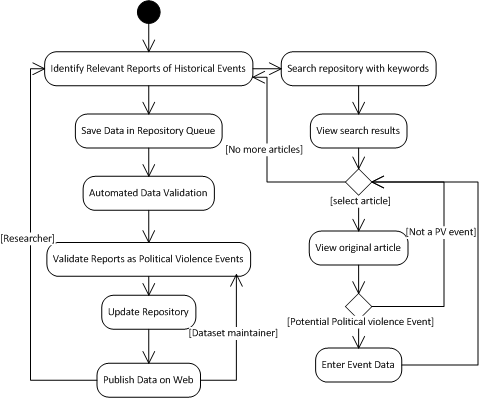

Liberty Leading the People, Eugène Delacroix, 1830
The Political Violence Datasets project aims to provide social scientists with easy access to linked datasets for social scientific research. The goals of the project are:
The Political Violence Vocabulary was created in order to translate the USPV data into a structured linked data format, as well as to provide a framework for capturing the data for the UKIPV dataset. The data is structured as linked data in a Resource Description Framework (RDF) triplestore. The Political Violence Vocabulary documentation describes the structure of the vocabulary. Publishing Social Sciences Datasets as Linked Data: a Political Violence Case Study describes the process by which the vocabulary was developed.
DaCura is a framework which can support users who are not semantic experts in effectively managing datasets over time. This framework consists of an input control module, a third-party data store, and a set of viewing and publishing interfaces for data set access. In addition, the Political Violence project uses specialised data input tools for researchers consulting a historical corpus. These data input tools are self-generating from the political violence schema, and aim to increase researcher productivity and the accuracy of the event data extracted.
You can contact the Political Violence Datasets team by email.
Principal Investigator: Professor Declan O’Sullivan, Head of Discipline, Intelligent Systems, KDEG
Researchers: Dr Kevin Feeney, Research Fellow, KDEG; Dr Rob Brennan, Research Fellow, KDEG
Research Assistant: Odhran Gavin, KDEG
Intern: Rosa María Jáudenes, KDEG
Data collection volunteers: Gavin Mendel-Gleason, James O’Brien
Advisor: Professor Peter Turchin, University of Connecticut